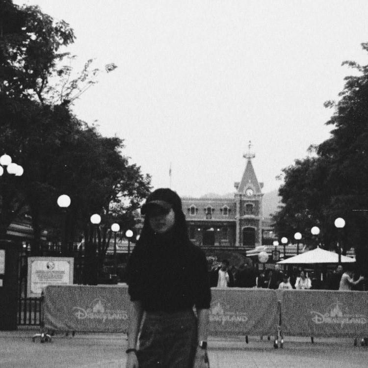

hi! my name is
rebekah
thereze
some things about her.
Rebekah Thereze is a nineteen-year old BS Computer Science student from Malayan College of Mindanao. Born on August 03, 2002 in the city of Davao. Due to the fact that her father is a computer teacher, she was already exposed to computers and technology at an early age. But the path she took in college was actually not something she was already thinking about years back. No, it was also not impulsive. Maybe… it just happened.
about her family.
Born in a family of five, she is the eldest in the sibling line with two younger brothers. Both of her parents are high school teachers. She is also close with the extended families of both sides.
her hobbies.
If not sleeping or doing school works, Rebekah Thereze likes to just laze around and scroll through the screen. Or if not, still, she may be sitting right at her desk, doing her failed arts and crafts. She has been interested with various things about art and tried basic artsy stuff like basic photo editing, photography, calligraphy, typography, basic video editing, bullet journaling, basic digital drawing, and etc. Yet she has mastered none of the above. She is also interested in learning other languages, but finds a hard time to do so. But most of the time, she just sleeps.
fast forward to 30 years old.

Rebekah Thereze is already someone who is happy and contented with her life. Those words may have been used a lot of times already, but that’s how she is. It may be subjective depending on the person being talked about, it is sure that she is happy and contented in her own way. She is also fulfilling one of her greatest dream, that is to travel around the world. She already has a stable financial source and has been living the best of her life. Everything went beyond well.